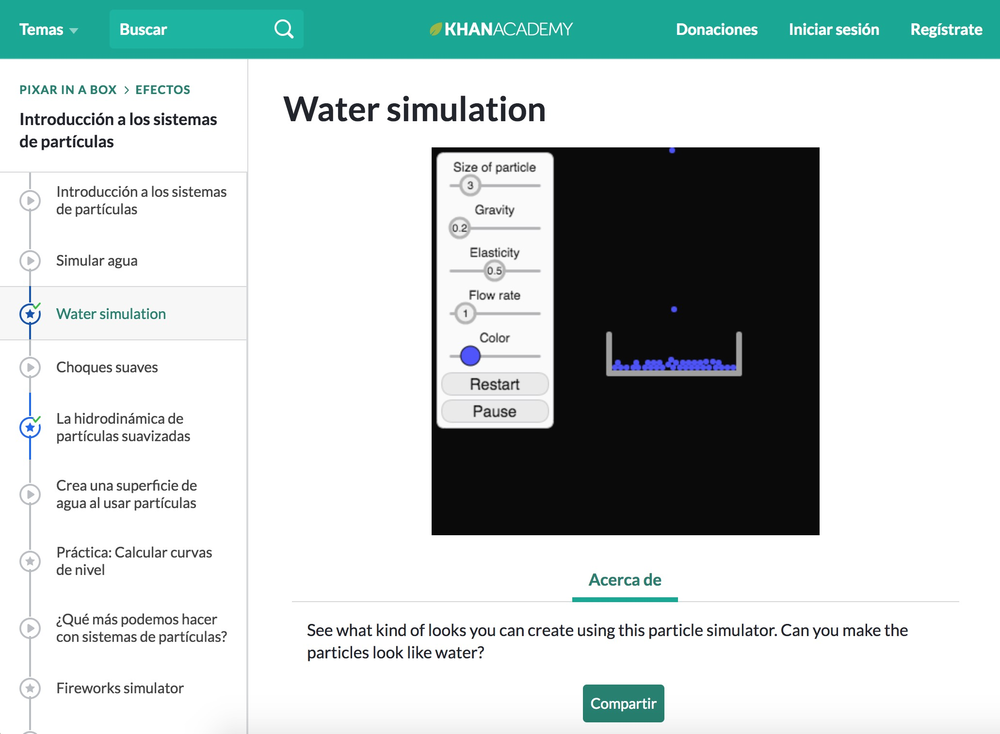

Estas técnicas son principalmente útiles para diseñadores con interés en diseño de información, wayfinding, UX y UI.
A continuación se presentan los arquetipos de usuario, que corresponden a diseñadores con distintos niveles de experiencia.
Nicolás Novoa
Extreme User Diseñador Novato
Beltrán Romero
Mainstream Diseñador
Sergio González
Extreme User Diseñador Experimentado
¿Cómo?
Estos son mis antecedentes y referentes. Debe tener una base académica como los artículos de UX de Nielsen y la teoría de la magia, en conjunto con la interactividad didáctica del aprendizaje tangencial de plataformas como Khan Academy.
Khan Academy es una plataforma de aprendizaje online, que cuenta con una estructura con pasos lógicos, y una metodología que se ajusta distintos usuarios, gracias al uso de ejercicios didácticos interactivos.
Nicolás tiene 19 años, es estudiante de primer año de Diseño, y cuenta con un nivel socioeconómico medio. Posee nociones básicas de manualidades y diseño gráfico, y sus intereses varían entre la realización de afiches, ilustración, videos, entre otras técnicas que le permitan desenvolverse en sus nuevos ramos universitarios.
Al ingresar al sitio web sentirá sorpresa, y no debe perderse en complejos tecnicismos desalentadores. A mediano plazo comprenderá cómo el diseño se nutre de otras disciplinas, y a largo plazo podrá comenzar a aplicarlo en sus proyectos universitarios.
Para ajustarse a su experiencia ideal, el sitio debe contar con una inducción narrativa y una sintáxis clara, que logre nivelar el marco teórico que le falta para comprender en mayor profundidad el contenido.
Literatura con que cuenta:
-
Beltrán Romero
Usuario Mainstream Diseñador Medio.
Beltrán tiene 22 años, es estudiante de cuarto año de Diseño y cuenta con un nivel socioeconómico medio. Es un tipo interesado en su disciplina, y tiene nociones de diseño de información y usabilidad proporcionados por la malla curricular de su carrera, sin embargo la atención humana, pensando en los usuarios es un fenómeno tratado con baja profundidad en este campo.
Su primera sensación al ingresar al sitio web es curiosidad acerca del nexo entre diseño y magia, y busca sorprenderse. Luego, el objetivo es aprender de las técnicas de manejo de atención.
A mediano plazo comprenderá que la atención es un fenómeno más complejo que la noción común sobre-estimada que existe de ella, y que tal vez muchos de sus proyectos universitarios habrían sido distintos de haber sabido esto antes. A largo plazo buscará aplicarlo en el proceso proyectual de sus proyectos de diseño.
Para ajustarse a su experiencia ideal, el sitio debe contar con ejercicios didácticos que calcen con su motivación e interés inicial, y que a su vez demuestren el potencial de las técnicas.
Literatura con que cuenta:
Information Design (2000). Robert Jacobson.
Sergio González
Extreme User Diseñador Experimentado.
Sergio tiene 40 años, es diseñador de experiencias, tiene su oficina de diseño hace 10 años y posee un nivel socioeconómico medio. Estudió en la Universidad Católica de Valparaíso y utiliza una metodología tipo Bauhaus. Tiene conocimientos avanzados de diseño de información, y usabilidad, con manejo de conceptos como affordance de Don Norman.
Su primera sensación al entrar al sitio será de esceptiscismo ante la nueva propuesta, contraria a los métodos que ha utilizado durante décadas. A mediano plazo buscará leer a grosso modo los contenidos, y compararlos con antes antecedentes previos, buscando pruebas y validaciones empíricas de cada propuesta.
El objetivo a largo plazo es que logré incorporar las técnicas mágicas de manejo de atención a su workflow de diseño, y para ello el sitio debe contar con ejemplos concretos de antecedentes existentes que funcionen bajo la lógica de las técnicas mágicas, comparando su performance antes y después. Junto con esto, será importante incluir respaldos empíricos que apoyen cada técnica propuesta, de manera que este diseñador experimentado no desconfíe.